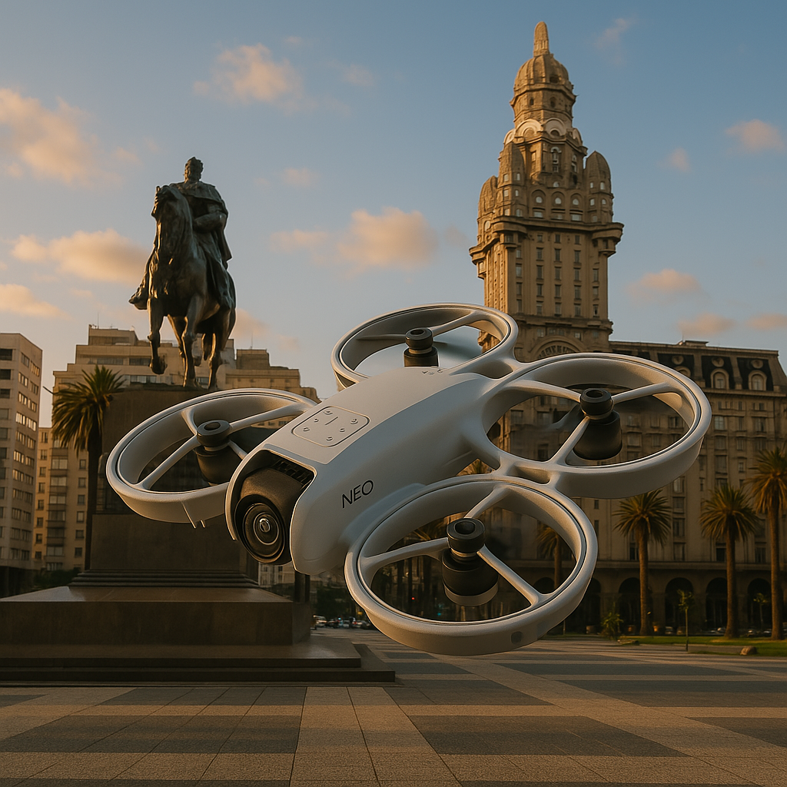

FPV con un dron economico
¿Por qué una fan page para el dron DJI Neo?
Hice esta fan page porque el dron DJI Neo vuela mejor que yo manejando…y graba tan bien que hasta Pinamar parece el Caribe. Voy a compartir lo que graba.
"El mejor vuelo es el que te lleva a lugares que nunca imaginaste ver desde esa perspectiva."
Acá encontrarás lo que este dron puede hacer.